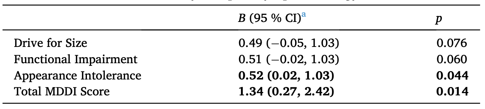

Athletes turn to creatine to gain muscle, increase strength, and enhance performance, but emerging research points to a different kind of growth alongside the physical: an increase in muscle dysmorphia. Muscle dysmorphia is a mental health disorder similar to obsessive compulsive disorder in which people become preoccupied with perceived flaws in their appearance, often leading to mirror avoidance, repeated checking, excessive exercise, or reassurance seeking.
Creatine monohydrate is a naturally occurring compound commonly found in seafood and red meat. It helps muscles regenerate ATP faster and draws water into muscle cells, making them perform and appear fuller. These effects can cause users to gain two to three pounds of water weight and help explain creatine's popularity among athletes, military personnel, and high school athletes.
Many studies have shown that creatine has no major adverse physical effects and can improve performance through increased endurance and shorter recovery times. Still, the quick visual changes it creates may not match the slower reality of long-term muscle growth. Creatine assists muscle growth, but it does not directly add muscle by itself. When expectations are shaped by advertising, peers, or social media, users may feel that they are underperforming or not muscular enough. Creatine also does not affect about a quarter of the population, which may intensify those feelings for some users.
Although many researchers have examined creatine's physical effects, far fewer have explored its mental health effects. A study by Kyle T. Ganson, Alexander Testa, and Jason M. Nagata aimed to begin filling that gap by examining whether creatine use was linked to later muscle dysmorphia symptoms.
The researchers used data from the Canadian Study of Adolescent Health Behaviors, a national sample of young people recruited through Instagram and Snapchat advertisements. Participants completed two rounds of surveys one year apart. In the first wave, they reported whether they had used creatine in the past twelve months and completed a Muscle Dysmorphic Disorder Inventory questionnaire. One year later, they completed the same questionnaire again.
The study separated muscle dysmorphia into three categories: drive for size, appearance intolerance, and functional impairment, meaning how much appearance concerns disrupt daily life. This design allowed the researchers to test whether creatine use at the start of the study was associated with higher symptoms later on, even after accounting for earlier symptoms and other differences among participants.

Overall, creatine use was associated with higher muscle dysmorphia scores one year later. The strongest statistically significant associations were found for appearance intolerance and the total MDDI score. In simpler terms, users reported more overall body image concerns and greater dissatisfaction with their appearance.
The study does not prove that creatine causes muscle dysmorphia. However, because the researchers followed participants over time and adjusted for age, gender, prior symptoms, and other factors, the association cannot be explained only by pre-existing differences between users and non-users.
The study has limitations. It relied on self-reported data, and the Muscle Dysmorphic Disorder Inventory was designed for adults rather than adolescents and young adults. The sample was also not randomly selected, which may limit how broadly the findings can be applied. Other unmeasured factors, such as medication use or differences in symptom awareness, could also affect the results.
Even with those limits, this research is among the first to identify a prospective association between creatine use and muscle dysmorphia symptoms. The results suggest that creatine use may be a risk factor worth monitoring among adolescents and young adults. They also highlight the importance of early assessment and support for at-risk users as researchers continue to investigate the connection.
Works Cited
American Psychiatric Association. (2013). Diagnostic and statistical manual of mental disorders (5th ed.). American Psychiatric Publishing.
Antonio, J., Candow, D. G., Forbes, S. C., Gualano, B., Jagim, A. R., Kreider, R. B., & Ziegenfuss, T. N. (2021). Common questions and misconceptions about creatine supplementation: What does the scientific evidence really show? Journal of the International Society of Sports Nutrition, 18(1), 13. https://doi.org/10.1186/s12970-021-00412-w
Ganson, K. T., Testa, A., & Nagata, J. M. (2024). Creatine monohydrate use is prospectively associated with muscle dysmorphia symptomatology. Eating Behaviors, 54, 101910. https://doi.org/10.1016/j.eatbeh.2024.101910
Kreider, R. B., Kalman, D. S., Antonio, J., Ziegenfuss, T. N., Wildman, R., Collins, R., & Lopez, H. L. (2017). International Society of Sports Nutrition position stand: Safety and efficacy of creatine supplementation in exercise, sport, and medicine. Journal of the International Society of Sports Nutrition, 14, 18. https://doi.org/10.1186/s12970-017-0173-z
Phillips, K. A. (2005). The broken mirror: Understanding and treating body dysmorphic disorder. Oxford University Press.
Syrotuik, D. G., & Bell, G. J. (2004). Acute creatine monohydrate supplementation: A descriptive physiological profile of responders vs. nonresponders. Journal of Strength and Conditioning Research, 18(3), 610-617. https://doi.org/10.1519/1533-4287(2004)18<610:ACMSAD>2.0.CO;2
Wang, C. C., Fang, C. C., Lee, Y. H., Yang, M. T., & Chan, K. H. (2024). Effects of creatine supplementation on exercise performance and safety: A systematic review. Nutrients, 16(2), 245. https://doi.org/10.3390/nu16020245